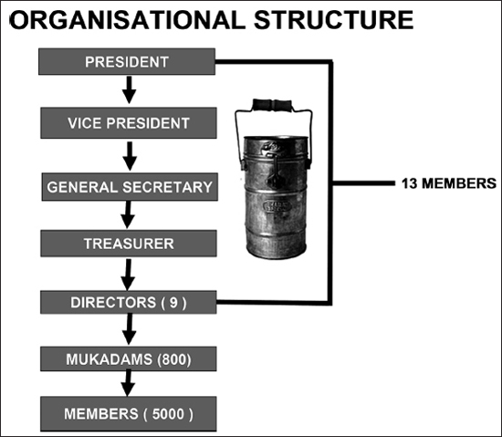
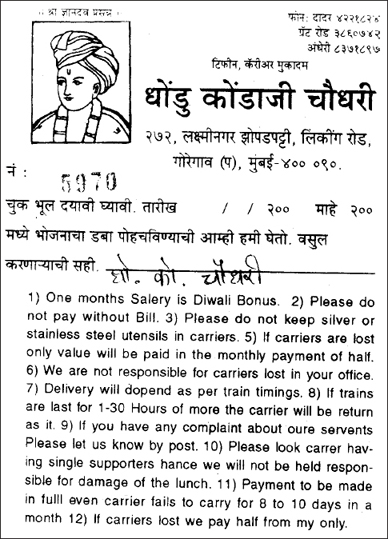
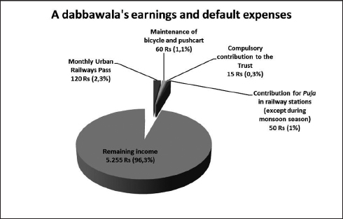
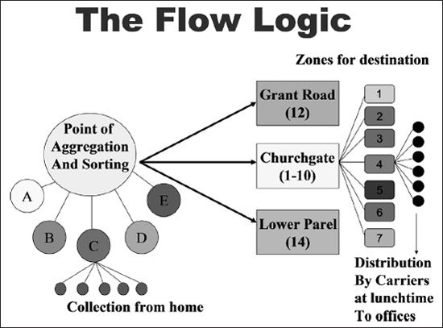
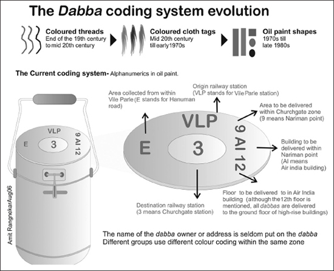
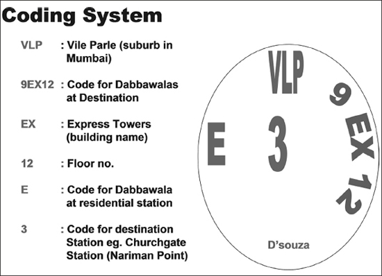

3. Nutan Mumbai Tiffin Box Suppliers Charity Trust: The Shaping of Dabbawala Relations
DOI: 10.11647/OBP.0031.03
After the initial rudimentary cooperative was set up in 1954, the Nutan Mumbai Tiffin Box Suppliers Charity Trust (NMTBSCT) was registered with that name in 1984. The name was developed to include all the elements that characterise the work of the dabbawalas: the city where tiffin delivery is offered; the organisation’s specific role as a distribution network; and its establishment as a charity trust, reflecting its social commitment to sponsoring various non-profit projects.1
An executive committee of thirteen permanent members sits at the highest level of the NMTBSCT, and it is responsible for defining and fine-tuning the overall dabba transport system in Mumbai. A second tier consists of about 800 mukadams, who are the group leaders in charge of a team of five or ten dabbawalas. The rest of the organisation is made up of the dabbawalas themselves, the members of the association. In the words of NMTBSCT’s president, Raghunath Medge:

Figure 7. Diagram by Pawan G. Agrawal, director of Mumbai’s Agrawal Institute of Management. By kind permission of Raghunath Medge.
The executive committee
The executive committee is elected every five years and comprises a president, vice-president, secretary general, treasurer and directors. Committee members meet every month to discuss any problems related to the service and the association’s line of operations. Crucially, all the people who hold these offices continue to operate as dabbawalas because their salary comes from distribution work. Even the president does not draw a salary on the basis of his rank but on his dabba delivery line.
As president, Medge is one of the pillars of the NMTBSCT. He combines brilliant communication skills with the ability to transmit a vision of shared values.2 The sense of community in the association derives from the shared cultural background of the dabbawalas, but also from each dabbawala’s awareness that he is “part of an important project that generates meaning”, an awareness reinforced by the executive committee and by the president.3 There is a consolidated tradition that Medge has exploited whilst acting as president to leverage the dabbawala’s conceptual models—i.e. the images and figures that influence how a dabbawala interprets the world and consequently how he acts—to achieve a mutual objective and working trust amongst the members.4 This does not mean there are no conflicts amongst different groups, but these differences always play out within an association working for a common purpose. Social interaction between the dabbawalas is encoded within a corporate culture that uses a “policy of emotion management” to create a shared work ethic and enable socialisation which, especially in a migrant context, helps to overcome moments of loneliness by sharing holidays, free Sundays, and times of “sorrow and joy”.5 Medge explains:
A short story from an NMTBSCT dabbawala: free time and faith
I came from the village of Rajgurunagar, near Pune, and I’ve been in this family [in other words working as a dabbawala] for ten years. My own family is all back at the village. I’m on my own here. Someone from the village brought me here to work as a dabbawala. In Bombay I live near Four Bangla, at Sagar Kuti, where we have a room. My work starts at Four Bangla and goes as far as Vile Parle. We are an association of people working as dabbawalas. We meet after work and we pass the time performing plays. We go to ramlila [a pilgrimage] and sometimes there’s Pandhur [this may be the festival of Pandharpur, which is the sacred place of the Varkari], we play the lezid [harmonium]. We go on the ramlila pandhupratha [pilgrimage] to the temple of Ramgir Baba Garon. We also play the harmonium and I play the taal [a kind of drum also called a dholak]. But we stopped playing in Bombay about five years ago: we do it at the village.
On Sundays we stay at home with our families. Anyone who doesn’t have a family here and is alone goes to their friends. You know yourself how nice feast days are. Anyone who wants can go, because in this country we are free. Anyone who wants can take Sunday off and go to their family or their children, or do errands they can’t do during the week, or meet their friends, meet people. Anything you can’t do from Monday to Saturday, you can do on a Sunday. We dabbawalas meet for the festivities and celebrate them together. For instance, Holi [the festival of lights] or feast days on the Hindu calendar. For Holi we all meet the day before, because we don’t work on Holi itself. During Holi we play with colours. We play where we work but if we go to the village, then we really celebrate Holi properly, better than in Bombay. They don’t do so much in Bombay. We share every joy and every sorrow. It doesn’t feel as if we’ve gone so far away: the village is close. All my family is there: my wife, my sons and daughters. Two of my children are married and two still go to school. One is in seventh class, the other is the fourth class of the Marathi school [taught in Marathi]. One is twelve and one is eight. I’m Marathi, they are Varkari. [He shows his necklace] This is a Pandharpur necklace. As Medge says: ‘Work is worship’, no doubt about it. We all believe that.
Each area of Mumbai served by the dabbawalas has a director and the areas are defined in relation to a railway station. One of these is Borivali; others are Kandivali, Malad, Andheri and Thana. The directors are in contact with one another and ensure there are no problems in distribution. For this reason, they do not have an office but work on trains, station platforms, dabba handover areas and places where organisational issues may arise. The job of the director is appointed based on skills and seniority, since the delivery work is physically very tiring. Aspiring directors must also have an aptitude for managing human resources, which can be seen in their vision of their work group as a real family and in their loyalty to the association’s values, expressed in concrete terms by worshipping Varkari Sampradaya. Medge describes the role of the director:
Gangaram Talekar, the NMTBSCT secretary, adds:
A short story from the NMTBSCT director
I’ve been in this job for twenty years. My father worked in the fields. When I arrived in Bombay I didn’t join the dabbawalas immediately. First I went to Malad, because my sister was there and I worked with her for five years, then I started this job. I rented a room at Andheri, in Sher-E-Panjab, and I became a dabbawala. Many of the other villagers were dabbawalas and I liked this job too, so I started with the basic salary. After eight years I became a mukadam. I gave money to my mukadam a little time at a time. I saved up and slowly paid for the line. Now I have two lines in Andheri and I’m both a mukadam and a director. The roles are similar, so if someone working in my group doesn’t turn up, if they’re ill or they go back to the village, then I do their job. It used to be very good in Bombay, with not too many people. Here in the village there wasn’t much money and getting to the city was cheap. The work was agreeable and the trains weren’t jam-packed. It was fine but now it’s too crowded. The crowds have increased as we’ve got older. I’m 50, so I no longer enjoy this work. The weather in my village is good and it’s a good place to be. Bombay’s too hot, there is a lot of pressure. I used to like it; when you’re young it’s different. The younger ones enjoy it but the older ones don’t.
The second line of operations
The second line of operations is coordinated by over 800 mukadams, who supervise the tiffin route as far as the final delivery.7 The mukadam participates in the recruitment of new dabbawalas, assessing their suitability by taking into consideration both their reputation and their shared origins with other members of the association. He also manages relations with customers, making preliminary agreements for deliveries, and administers monthly subscriptions (at a cost of about 120 rupees per month).
As can be seen from the twelve points in the agreement form (Figure 8) the delivery system is based on a code whose observance is enforced by the mukadam, who also oversees any disputes that may arise among various dabbawala groups as well as having the more difficult task of enhancing network competitiveness to improve earnings.

Figure 8. Client agreement form. By kind permission of Raghunath Medge.
Each of the approximately 120 groups present on Mumbai territory is independent of all the others: it is a “Strategic Business Unit” and has to increase its customer base in order to generate the dabbawalas’ wages.8 Medge uses the metaphor of a cricket team to describe the mukadam’s role:
A short story from an NMTBSCT mukadam
The name of my village is Rajgurunagar and it’s in the Pune district. I worked in the fields there. There are five of us altogether: four are in Bombay and one is in the village, still working in the fields. I came to Bombay in 1960 and started with tiffin work in 1967. I used to work in Dadar but now I work at Andheri and I’m a mukadam. My father wasn’t a dabbawala, he worked in Bombay near Victoria Terminal. He loaded and unloaded many of the ships that docked. I’ve been in this job for seventeen years and I’ve been a mukadam from the start. I have ten to twelve people working with me because I bought the line [the line is the specific route assigned to a mukadam]. There are forty tiffin in a line [here the term line is used to indicate the basket for carrying dabbas], which I bought from another dabbawala. Now my Andheri group has about thirty to thirty-five lines. A mukadam’s work includes filling in for a man if he doesn’t come to work. For example, if a dabbawala doesn’t come to work today, perhaps he’s sick, so I’ll work in his place. If there are problems at the station, they call me: if they need help to load trains, or if there are problems with traffic, or parking. But there aren’t any big problems.
The dabbawalas, the mukadams and the thirteen figures that make up the executive committee are members, “freelancers”: no one is an employee. The association has no institutional hierarchy but an agreement for decentralised operations, with each group using its own resources to extend the customer base. The current contractual formula was drawn up in 1982, after two incidents (the 1975 railway worker strike and the 1982 cotton worker general strike) induced the NMTBSCT president to modify the association’s statute, changing it to a cooperative. Gangaram Talekar explains:
A dabbawala’s earnings derive in part from the ability of each group to attract more customers into their network but also partly from the role played by an individual dabbawala in that network. Those who have just joined the association and have not purchased a mukadam line have a fixed basic wage that may vary according to the group’s revenue (from 2,500 to about 4,000 rupees a month). A mukadam supervising a group earns on the basis of how many tiffins his men can deliver; if he supervises various groups, who deliver tiffins in various parts of the territory, his earnings may be higher (about 6,000–7,000 rupees a month). To become a mukadam, an ordinary dabbawala has to buy a customer line being auctioned off, which occurs when a mukadam decides to retire and sells off their lines because their children are not interested in taking it over. One NMTBSCT dabbawala describes how he began:
Another dabbawala explains how the system works:
Data supplied by Medge made it possible to reconstruct the costs of managing and the net earnings of an individual dabbawala member.

Figure 9. Dabbawala Costs Managing.9
Distribution logic10
The NMTBSCT has the monopoly over the meal delivery service and, thanks to both its excellent grasp of distribution logistics and the high reputation it enjoys as an annadatta (food deliverer), it has gained a considerable competitive edge in a specific segment of the Mumbai market. Traditionally, logistics were regarded only as a function that allowed the enterprise to optimise materials, goods and intangible flows, like information. With the emergence of the “supply chain” concept that the dabbawalas appear to use in their management approach, the whole logistics process has been redefined to optimise links and coordination among suppliers, customers and distribution.11 In this respect, the inventory levels and flow of goods in the supply chain have been optimised, with an increase in the production efficiency of the enterprise and its fulfilment of incoming orders, while improving customer service by keeping prices down. The association therefore appears as an organisation capable of planning, implementing, and monitoring delivery operations, and as an expert in the “art” of moving materials, people and information from one place to another in order to satisfy customers.12
What is known today as “supply chain management” has been effectively, albeit more or less unintentionally, internalised by the entrepreneurs of Mumbai’s meal delivery sector. The logistics essential to managing the distribution network revolve around the availability of urban infrastructures and the cultural approach that dabbawala customers have to food. The dabbawalas adapt their distribution logistics and planning process to customer needs, taking into account the flexibility of their own working group. In 1998, the American magazine Forbes conducted a study of the dabbawala service and awarded its organisation a 6 Sigma, with a 99.9999% accuracy rate.13 This means that only one tiffin in every six million deliveries goes astray.14 Natarajan Balakrishnan and Chung-Piaw Teo, researchers at the National University of Singapore, compared the dabbawala distribution system with that of postal delivery and of a Mumbai goods retailer.15 In the first case, the mail is sent to a single central sorting branch and then delivered to the final recipient via a hub that handles distribution operations. The goods retailer, on the other hand, uses a zone map system similar to that of the dabbawalas, i.e. identifying groups of vendors within coded zones and then supplying each of these through a sub-sorting unit.
Although logistical considerations are important in meal delivery organisation, there is a strong likelihood that the dabbawala system relies mainly on Mumbai’s specific culture which, in turn, orients the executive committee’s planning. The dabbawalas identified Mumbai as a source of opportunity and their delivery process developed by taking into account the changing metropolis and the evolution of the preferences and well-being of the inhabitants, the urban infrastructure and social characteristics. Indeed, the service is difficult to replicate in other cities precisely because several elements characteristic of Mumbai are absent in other urban contexts—a very extensive transport network and large working class, combined with the cultural unity of the dabbawala association rooted in the rural areas around the city. Considering these aspects, it can safely be said that Mumbai is the cultural milieu underpinning the dabbawala distribution rationale, the mental map that underlies their work and from which they draw inspiration.
The delivery process
The dabbawala starts work at about eight-thirty in the morning, when he cycles or walks to pick up dabbas from the door of the “customer-supplier”, usually whoever does the cooking. Time is of the essence in this process, because if one of the two parties is running late, the subsequent schedule fails. On average, each dabbawala is responsible for collecting thirty to thirty-five dabbas, the number depending on personal ability to memorise customer addresses and the physical strength for carrying the tiffin baskets. One NMTBSCT dabbawala describes his day, and the efforts made to deliver his tiffin on time:
After this initial collection stage, the containers are taken to the nearest station by bicycle or in wooden baskets. Here a second group of dabbawalas, from the same line, takes the previously collected dabbas and loads them onto the trains. Although there is no formal agreement with the railways, the goods compartment at the head of the train is left for the dabbawalas or people carrying bulky goods. The biggest difficulties are the crowded stations and trains, which always make it problematic to move the heavy baskets among people trying to board the trains. Dabbas have to be loaded very quickly, in the thirty seconds the train stops on the platform. After this second stage, all the precious lunches are ready to move on to their destinations. If the trip is very long and includes a line change, the dabbawala in charge of the final delivery takes his own dabbas to a collection and sorting point. There are several strategic nodes near railway stations that serve as main centres for final sorting. In this case, the figure of the mukadam becomes essential for efficient coordination of the delivery network to ensure that no dabba is lost or routed to a wrong destination. The third stage is the final delivery: from the strategic collection point the cooked lunch is taken to the place of work of the “receiver-customer” for about 12.30 pm. The tension gradually eases and the dabbawalas can rest, eat their lunch and, lastly, prepare to make the journey back, following a circular route that begins and ends in the same way every day of the week except Sunday.

Figure 10. The Flow Logic. Diagram by Pawan G. Agrawal, Director of Mumbai Agrawal Institute of Management. By kind permission of Raghunath Medge.
The delivery process is easier to understand by looking at a schedule of the stages involved in dabba distribution:
8.20 |
The dabba is prepared by the “supplier-customer” and left outside the front door. |
8.25 |
The dabbawala arrives and picks up the dabba. If he does not see it, he knocks on the front door. |
8.35 |
The dabbawala loads the dabba into his tiffin basket or onto his bicycle along with others picked up in his area. |
9.25 |
The dabbawala arrives at the dabba collection area of the nearest railway station. |
9.30 |
The sorting process starts and dabbas are grouped according to where they have to be delivered. |
When the train arrives, the dabbawalas board the compartment at the head of the convoy. |
|
10.15 |
The train arrives at the major junctions and if the dabbas have to change line to reach their destination, they are delivered using a relay system involving another dabbawala. |
11.00 |
The dabbas change trains and continue their journey. |
11.45 |
Arrival at destination station. |
12.15 |
The dabbas are loaded onto various baskets or bicycles and taken to the “receiver-customer”. |
12.30 |
The dabbas arrive at the place of work of the “receiver-customer”. |
Afternoon |
The delivery process is reversed and the empty dabba is collected at about 1.30 pm from the “receiver-customer” and returned to the “supplier-customer”. |
Table 1. Schedule of the dabba distribution.
The dabbawala alphabet
A system like this could not exist without a code for identification of the dabbas. The containers change hands several times during the day, so the group must be able to recognise them or they may be lost along the way. Most dabbawalas are completely illiterate or barely able to read and write, so tiffin delivery relies on the use of identification systems to ensure successful delivery. These systems were an important factor in network development and basically comprise four or five symbols of different colours painted on the containers. Nevertheless, they do not share the same style due to the dabbawala association’s characteristics, which gives each group the freedom to manage its work independently. Thus, the codes are often indigenous, derived from the regions of origin, or are symbols that bring to mind specific circumstances. In most cases, however, they are symbols common to the Indian cultural context, like letters of the Devanagari alphabet, religious allegories or just geometrical symbols, some of which are shown below:
Figure 11. Examples of dabba symbols. By kind permission of Raghunath Medge.
GLOSSARY OF SYMBOLS16 |
|
Dotted, right-facing swastika |
Swastika: from the Sanskrit su “well” and asti “being”. This is the most frequent representation of the swastika used in Hindu symbolism. It is an ancient symbol, often linked to the Sun and the solar cycle (the four arms may represent the seasons). It is an emblem of transformation, of infinite steps of status, of cyclical eternity and, as such, has assumed important connotations in various religions and philosophies. In Asia it is found in Hinduism, in Tibetan shamanism (bon), in Jainism, Buddhism, etc. In Europe it is seen in megalithic civilisations, Germanic and Celtic shamanism, etc. Often the orientation (right-facing or left-facing swastika) or the type of arm (curved or hooked swastika) will change according to the cultural context. The Hindu swastika is a positive symbol that symbolises the invigorating power of the Sun, which is renewed every day, hence the allusion to well-being. Traditionally the right-facing swastika is connected to Ganesha and is considered an auspicious symbol for the start or the inauguration of concepts or businesses, so it is seen at the entrance to buildings of worship, on book covers and at the front doors of homes. The left-facing swastika is consecrated to the goddess Kali. Typically in India (and in Tibet, where this symbol is known as norbu shi khyi), the swastika is drawn with four dots between the arms, an allusion to the four purusharths or duties/principles/achievements/blessings of the Hindu person: dharma (righteousness); kama (pleasure); moksha (knowledge); and artha (wealth). It is also read, above all in the vajrayana Buddhism, as a reference to the four “bodies” or koshas: – annamaya kosha: the shell of food (physical body) – pranamaya kosha: the shell of the vital force (five life breaths and internal organs) – manomaya kosha: the shell of the mind (mind and perception) – vijnanamaya kosha: the shell of intelligence/understanding (mind and senses). |
Swastika without bent arms or even a possible Hindu-Christian syncretism of the symbol of the cross and the swastika. |
|
Dam |
|
Bo |
|
Number seven |
|
Ca |
|
Ma |
|
In classic iconography this symbol could be associated to a shell for its inner concentric line, reminiscent of a shell’s circles. In turn, the shell is a symbol attributed to Vishnu. |
|
Unknown |
|
|
Unknown |
Unknown |
|
Ba |
|

Table 2. Glossary of symbols.
Despite each group enjoying a certain amount of autonomy, a partial standardisation of style was introduced several years ago when Medge gave some useful guidelines for creating these symbols. He provides an interesting description of this change:
The dabba identification code was also essential in 1993, when there were bomb attacks on the railway network. On that occasion, despite strict controls during the periods following the attacks, there were no specific inspections of dabbawalas because, as one interviewee pointed out, in addition to the trust placed in them by the police, the dabbawalas themselves are the first to notice any abnormalities in their tiffin. Only the dabbawala and the people in his group can recognise dabbas that are not part of their line, thanks to the identification codes, and in such a case they would refuse them immediately. An NMTBSCT dabbawala explains why tiffins weren’t searched during security checks:

Figure 12. The dabba coding system evolution. Diagram by Pawan G. Agrawal, director of Mumbai Agrawal Institute of Management. By kind permission of Raghunath Medge.

Figure 13. The dabba coding current system. Diagram by Pawan G. Agrawal, director of Mumbai Agrawal Institute of Management. By kind permission of Raghunath Medge.
Apprenticeship and “practical management”
As the narrator of this short story reveals, most dabbawalas are illiterate or have attended only the early years of elementary schooling. Yet this does not seem to pose a problem to their tiffin pick-up and delivery work, because the basic skills required for their job rely on two main resources: possessing the physical strength needed to carry heavy tiffin baskets and being a native of the areas common to all dabbawalas. These two elements complement each other, because they allow workers to ground their communication in a shared language and a shared faith, as well as in a body language they recognise as their own.
Such non-verbal expressions are seldom studied in social sciences but are very important in daily personal interaction, since they allow immediate recognition among kin and kind, developing a trust that is not conditioned by verbally expressed knowledge. This “civilised gaze” is essential to social interaction, for as Paul Connerton suggests, “We always base our particular experiences on a prior context in order to ensure that they are intelligible at all”.17 The body, which basically learns the world’s sensory fabric, retains a memory of our actions, incorporating individual behavioural patterns that evolve in the course of a community’s collective history. This manual memory generates a different model of learning, a practical knowledge, which makes the social body movement and experience the collective expression of everyday work. Medge summarises this knowledge in his definition of practical management:
An NMBTSC member explains: why we become dabbawalas
There are many reasons why we leave the village to come to Bombay. Some have no choice, some do, some come to work and some for pleasure. In this job the point is to have time, not brains or talent, because some of us are illiterate, some have been educated, but those who are in the service network, whether educated or illiterate, all work the same way. Once they’ve learned the job, once the line work is explained, even those who have no education can do it well. Anyone can be perfect for this. To do other work you need to be educated, there are limits, you need to have reached tenth or twelfth class. But here, even those with no education can earn up to 5,000 rupees. Those who live in the village are not very well educated, so they came to Bombay to earn a wage because even people who are not educated can earn well. People who live in the village are used to working from the start, both hard work and slow work: for them there’s no difference. They just need the money, the money for the family. Who can manage on 1,000, 2,000, 2,500 rupees. It won’t fill the belly, so there has to be another job. They like tiffin work so they move here. And if someone doesn’t like tiffin work, they don’t come, they go somewhere else and do another job.
Cooperative competitors
The shared aim of each dabbawala team is to deliver the customer’s lunch on time. The group is organised internally so that if one of the dabbawalas is absent, he is replaced by a colleague. Moreover, the system requires a mentality that promotes the sharing of responsibilities with intensified interpersonal cooperation. Medge describes this attitude with a metaphor: “the five fingers of a hand alone cannot do much, but if they work together they can grasp, embrace, grip, and make hundreds of gestures”. Dabbawalas therefore manage their business without interfering with that of others, since they know that the fortune of each person is closely connected to the system’s overall success. The association’s structure and the type of contract applied to the dabbawalas also foster “cooperative competition”. This means the groups compete amongst themselves to acquire more customers for their own lines, and cooperate with co-workers in the group to increase profit and, at the same time, membership for the NMTBSCT. A dabbawala talks about this competition:
Medge, however, insists that there is no rivalry:
Another dabbawala adds that co-operation is key to success:
Competition between teams rarely turns into open conflict, but there may be problems between different groups on a train or on the platforms when they are carrying heavy baskets or bicycles. When this happens, a chain of communication is triggered from dabbawalas to mukadams, and then from the directors as far as the president, if more complex issues are to be resolved. Conflicts are never settled by recourse to external figures; instead, the association’s own rules of conduct are implemented, like a “mini government” with legislation and sanctions. Medge explains what happens when problems arise:
Cultivating empathy with the customer
Beyond the code of ethics that underpins the delivery service—no alcohol to be consumed during working hours; wearing a topi cap to be recognised by customers; delivering food as if it were an act of faith; in short, all the rules summarised in the expression “work is worship”—there is also a certain empathy with the customer. Through a non-aggressive attitude, the dabbawala connects with what is probably the most “sentimental” part of Mumbai, the bond that exists amongst members of the family when they are apart during working hours (a wife to a husband, a mother to her children), and which is expressed in the daily act of feeding.
Dabbas’ customers are predominantly men, and work six days a week outside the home, spending little time with their families. The wife usually gets up early in the morning to prepare breakfast, and after her children and husband have left for school and work, she begins to cook lunch for her spouse, waiting for a dabbawala to arrive and pick it up. When the dabba reaches the place of work, the husband opens it up and enjoys home-cooked food. The meal embodies familiar traditions, recipes and flavours. Since it is the wife who usually cleans the tiffin after it is returned, she can judge how much her husband enjoyed his meal when she sees if there are any leftovers.18
The long relationship of trust that enables this everyday emotional connection between the city and its “bicycle runners” has its basis in the association’s internal rules. In fact, when the mukadam recruits, the aspiring dabbawala has to be of proven honesty and any violators are stigmatised by the group without having to resort to other type of justice. Medge describes the bond between the dabbawalas and their customers:
While finding new customers is one of the mukadam’s main tasks, a first contact is more often established through word of mouth among acquaintances and there is no particular strategy. Potential customers recognise a dabbawala on the street by his clothing, or they meet him at work, because his job involves delivering lunch to their co-workers. It would appear that the most important aspect for a prospective customer is that they trust a neighbour who, in turn, trusts a dabbawala.
An NMTBSCT dabbawala describes how this works:
Medge goes into further detail:
Intergenerational ties
The children of dabbawalas who have grown up in Mumbai often do not want to continue the work of the family. This resistance depends on several factors: often they are better educated and therefore aspire to professional prospects that were unthinkable for their parents. They also may want to withdraw from a job that appears tiring and socially degrading. The mukadams and the association’s executive committee are not particularly concerned by this, however, because for every young Mumbaite who says no, there is another youth arriving from the old villages who wants to join the network. Indeed, it seems that these continual migrations towards the city are the lifeblood of the association’s identity, characterised by rural virtues and a belief in Varkari devotional expressions. Although Medge praises these new recruits, he is aware of generational shifts: “The new boys do the dabbawala job well, even if previous generations worked better than the new ones. The youth don’t have the stamina to work that we had. We used to carry tiffin on our heads and shoulders, now it’s all done by bicycle. Now they’re using technology—mobiles, trains, bicycles”.
Another NMTBSCT dabbawala talks about the differences between the generations:
The generational turnover in the association is required to ensure the elderly return to the village and retire. During the 2007 fieldwork, Medge was considering insurance for dabbawalas that would provide compensation for any accidents at work and a minimum pension. As things stand, however, the livelihood of the elderly still relies on the presence of an extended family living in rural areas where the dabbawalas retire at the end of their working lives.20 One dabbawala discusses the importance of inter-generational care:
Medge says that when he retires, he will go back to his village:
Beyond technology: the railway network as a mental map
The dabbawala service draws its strength from a rational philosophy, an architecture of values that sustains a long-lived business based on minimum technology. These characteristics fit into the Mumbai way of life for two reasons: on the one hand, the dabbawalas convert their source values into knowledge of the urban territory and thus connect with the desires of people at an essential, intimate, and emotional level;21 on the other, the world of “small things” that they represent finds the widespread transport network, in particular the railways (with their low environmental impact), to be the means for reaching every customer. One dabbawala emphasises the significance of the railways in his work:
Every day, the urban rail and bus services are packed with commuters, who thus come into contact both physically (just taking a trip on any train will reveal what it means to be surrounded by a crowd like this, constantly jostling to get on and off) and mentally (since travelling together requires some mutual arrangement, a code of survival and reciprocal respect). This implicit code of conduct allows residents to access streets drawn on the Mumbai map, defined by stations, architecture, houses and signs that are all part of the sphere of social interaction.22 The latter demonstrates how power is stratified by class (first and second class compartments), gender (men and women), or bodily expressions (it is important to avoid physical contact with other passengers). Moreover, the city’s employment stratification is also clear: the packed rush-hour compartments reveal the professions of passengers. Office workers, teachers, factory workers, labourers and domestic help all usually catch trains between 7.30 and 8.30 am; sales staff going to the big shopping centres and those who do not have jobs in the public administration travel later. The railways connect the points of urban geography and are a kind of mental map for Mumbaites, allowing a linear view of the city, recognising it by the stations, the huge junctions that connect various rail lines and offering safe transit despite the endless changes in urban toponymy.23
The railways function as a relational nexus, an antidote to social fragmentation. Not only do they connect space and people, they also weave the threads of the many lives being played out in Mumbai into a tapestry that its residents can recognise and understand.24 Their social role is entwined with the very nature of the city, which is neither that of a cultural “melting pot”, nor of a “salad bowl” or a “mosaic”—to quote some of the metaphors commonly used by scholars to describe culturally complex human urban aggregates—but it is rather a “connective nature”, experienced and reproduced on a daily basis by millions of people.
The dabbawalas, like most of the people of Mumbai, make this means of transport their most relied upon technology. The wooden basket is still a key device for delivery, the bicycle has only been in use for ten years and the most recent conquest, the cell phone, facilitates communications between colleagues in a line. The aim, repeatedly reaffirmed by the president, is to limit the expenses that could only be sustained by increasing the cost of the monthly subscription. One NMTBSCT dabbawala talks about the way that technology has changed the ways in which the dabbawala network can operate:
Not even the monsoon stops dabbawalas delivering, although at times high water prevents trains using their usual track. In this case, as an interviewee explained very precisely, the service stops and the dabba is taken back home:
The dabbawalas base the entire service on the use of suburban trains, because deliveries are limited primarily to areas where a track is installed. The railway network comprises three lines: the Western Line that passes through the western suburbs and extends from Churchgate to Virar; the Central Main Line which passes through Thane and the central suburbs, and runs from Victoria Terminus (or Chattrapati Shivaji) to Kalyan (this is the line that meets the Western Line at the Dadar junction); and the Harbour Line from Victoria Terminus, branching at Vadala Road, with one branch going towards Panvel and the other towards Andheri. The dabbawalas celebrate the railways every month with a puja (excluding June, July and August because of the monsoons). Through this prayer, the sacralising expression of daily life, they give thanks to this valuable means of communication that allows the service to prosper by delivering lunch to customers. It is no coincidence that a popular Mumbai saying is: “If the train is the lifeline of the city, the dabbawalas are the food line”. An NMTBSCT dabbawala explains the role of puja:
Footnotes
1 All information contained in this chapter is based on interviews, personal communications and fieldwork undertaken in Mumbai in 2007. For further details of this fieldwork, please refer to the Appendix.
2 Medge has become a great spokesperson for the dabbawalas. After his first meeting with Charles, the Prince of Wales, in Mumbai in 2003, he was invited to the Prince’s wedding to Camilla Parker Bowles in 2005. These two events aroused the interest of the international press and gave the dabbawalas unprecedented media popularity. Studies by Indian and foreign researchers on the dabbawala style of management rocketed. The association’s official website offers articles to download, a direct line to the president, as well as an option for spending a day delivering dabbas with a group. See http://www.mydabbawala.com/general/aboutdabbawala.htm [accessed 30 January 2012].
3 Augusto Carena, “Un’organizzazione che apprende”, in Io erano anni che aspettavo. Impresa, lavoro e cultura in uno stabilimento del mezzogiorno d’Italia: la Barilla di Melfi, ed. by Giulio Sapelli (Parma: Barilla 2009), p. 41. Research was undertaken in the Melfi plant with the participation of Augusto Carena, Roberta Garruccio, Germano Maifreda, Sara Roncaglia, Veronica Ronchi, Giulio Sapelli, Andrea Strambio and Sara Talli Nencioni. Carena’s work draws upon a systemic reading of the Melfi plant and takes Peter Senge’s “Fifth Discipline” as the template for the structure, setting up five interdependent pivots: systems thinking, personal mastery, mental models, group learning, and team learning. See Peter M. Senge, The Fifth Discipline: The Art & Practice of Learning Organization (Danvers, MA: Doubleday, 1990).
4 Carena (2009), p. 44.
5 Catherine A. Lutz and Lila Abu-Lughod (eds.), Language and the Politics of Emotion (Cambridge: Cambridge University Press, 1990). Much has been written on the concept of “corporate culture”. Amongst others, see Edgar H. Schein, The Corporate Culture Survival Guide (San Francisco: Jossey-Bass, 1999); Geert Hofstede and Gert J. Hofstede, Cultures and Organizations: Software of the Mind, 2nd ed. (New York: McGraw-Hill, 2005). In this case I mean business culture as the intersection of different cultures or micro-cultures within the association. Each group has a strategy for developing its task based on a shared framework, but also on the possibility of managing that task independently. The micro-cultures may not be in harmony with each other and their interactions may result in conflicts and contradictions. This is because the company or the trust, belonging as it does to the social and symbolic order in which it is located, is a sphere that interacts with it and is therefore susceptible to the same processes of conflict and solidarity.
6 The NMTBSCT has three Mumbai branches: Dadar, Andheri (E) and Grant Road.
7 Traditionally the term muqaddam (literally “village chief”) indicated the upper peasant class—a sort of rural aristocracy who did not farm the land directly but enjoyed special privileges over the land and crops. See Michelguglielmo Torri, Storia dell’India (Bari: Laterza, 2000), p. 194.
8 Shrinivas Pandit, Dabawalas (New Delhi: Tata McGraw-Hill, 2007).
9 Data: Ramasastry Chandrasekhar, Dabbawallahs of Mumbai, Richard Ivey School of Business, University of Western Ontario, 2004, available at http://beedie.sfu.ca/files/PDF/mba-new-student-portal/2011/MBA/Dabbawallahs_of_Mumbai_(A).pdf [accessed 28 October 2012].
10 This section was written on the basis of my observation and participation in the delivery service.
11 Nasreen Taher, Impeccable Logistics and Supply Chain Management: A Case of Mumbai Dabbawallahs (Hyderabad: Icfai University Press, 2007). For a review of “supply chain management” practices and theory, see Claudio Ferrozzi and Roy Shapiro, Dalla logistica al Supply Chain Management. Teorie ed esperienze (Turin: Isedi, 2000).
12 C. S. Parekh, The Dabbawallas of Mumbai (unpublished PhD thesis, Narsee Monjee College of Commerce and Economics, Mumbai, 2005).
13 S. Chakravarty, “Fast Food”, Forbes Global, 8 October 1998.
14 U. K. Mallik and D. Mukherjee, “Sigma 6 Dabbawalas of Mumbai and their Operations Management: An Analysis”, The Management Accountant, 42 (2007), 386–88.
15 See Natarajan Balakrishnan and Chung-Piaw Teo, “Mumbai Tiffin (dabba) Express”, University of Singapore, 2004, available at http://www.bschool.nus.edu.sg/staff/bizteocp/dabba.pdf [accessed 17 July 2012].
16 See H. Sarkar and B. M. Pande, Symbols and Graphic Representations in Indian Inscriptions (Delhi: Aryan, 1999); and Anna L. Dallapiccola, Dictionary of Hindu Lore and Legend (London: Thames and Hudson, 2002).
17 Paul Connerton, How Societies Remember (Cambridge: Cambridge University Press, 1989), p. 9.
18 Marie Percot, “Dabbawalas, Tiffin Carriers of Mumbai: Answering a Need for Specific Catering”, HAL: Sciences de l’Homme et de la Société, 2005, available at http://halshs.archives-ouvertes.fr/docs/00/03/54/97/PDF/DABBA.pdf [accessed 10 August 2012].
19 The Naxalites take their name from the Maoist revolutionary movement that has its origins in a peasant insurrection in the late 1960s, which occurred in the rural district of Naxalbari, in West Bengal. Nowadays, “Naxalite” is synonymous in everyday language for “terrorist”.
20 During my stay in the villages of the district of Pune, where most dabbawalas come from, I was a guest in Medge’s home. His family—his father’s two wives and an uncle, himself a retired dabbawala—live in a simple house surrounded by fields.
21 Pandit (2007).
22 Jim Masselos, “Defining Moments/Defining Events: Commonalities of Urban Life”, in Bombay and Mumbai: The City in Transition, ed. by Sujata Patel and Jim Masselos (New Delhi: Oxford University Press, 2003), pp. 31–52 (p. 32).
23 Ibid., p. 39.
24 Manu Goswami, Producing India: From Colonial Economy to National Space (Chicago: University of Chicago Press, 2004).